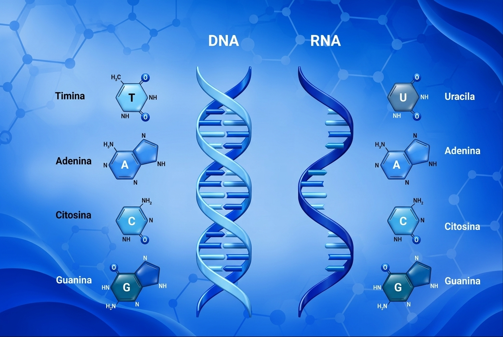

🧬 Ácidos Nucleicos
Polímeros formados por nucleotídeos, responsáveis pelo armazenamento e pela transmissão de informações genéticas.
DNA (Ácido Desoxirribonucleico)
• Estrutura em dupla hélice.
• Contém desoxirribose e a base timina.
• Função: armazenar o código genético.
RNA (Ácido Ribonucleico)
• Estrutura de fita simples.
• Contém ribose e a base Uracila.
• Função: Auxiliar na síntese de proteínas[cite: 4, 15].
Aplicação na Ciência e Tecnologia
Desenvolvimento de vacinas de RNA mensageiro e edição gênica através da tecnologia CRISPR.
Exemplo do Cotidiano
Exames de paternidade por DNA e testes de diagnóstico por PCR para identificação de microrganismos.

O DNA tem duas fitas em dupla hélice; o RNA é geralmente formado por uma fita simples.